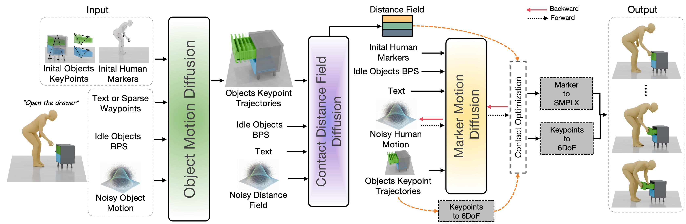

Surface Keypoint Representation for Multi-Object and Articulated Human-Object Interaction Generation
Abstract
Daily activities require humans to coordinate whole-body motion with the motion of surrounding objects. Despite recent progress in human-object interaction (HOI) generation, most existing methods assume interactions with a single rigid object and do not extend well to scenarios involving a variable number of objects or articulated objects with diverse joint mechanisms. We propose surface keypoint trajectories as an object motion representation: for each rigid component, whether a standalone object or one part of an articulated assembly, we track a small set of non-collinear surface points over time. This representation handles multi-object coordination and diverse articulation mechanisms directly from point dynamics without requiring explicit joint-type specification. To model when and where each body region contacts each object, we introduce a spatio-temporal contact distance field that extends distance-based contact modeling to whole-body, multi-object, and articulated settings. We factorize HOI generation into three stages: generating object motions from text or waypoints, predicting the contact distance field, and synthesizing whole-body motion with contact-guided optimization. Experiments on ParaHome, HIMO, ARCTIC, and OMOMO demonstrate better or comparable performance to existing methods across single-object, multi-object, and articulated interaction settings.
Methodology

Results Gallery
Qualitative results across datasets. Filter by dataset and swipe / drag to explore more.
Comparison with Baselines
Qualitative comparison against baseline methods on four benchmarks. Each benchmark is its own swipeable window — drag to see more examples.
Contact Prediction Visualization
Visualization of the predicted human–object contact distance field. Line color encodes distance: red marks points in direct contact, pink marks points that are close but not touching, and the absence of a line indicates the points are far apart.
Citation
@inproceedings{doe2025deepmotion,
title={Deep Learning for Human Motion Prediction},
author={Doe, Jane and Smith, John and Johnson, Alice},
booktitle={Proceedings of the IEEE/CVF Conference on Computer Vision and Pattern Recognition (CVPR)},
year={2025}
}